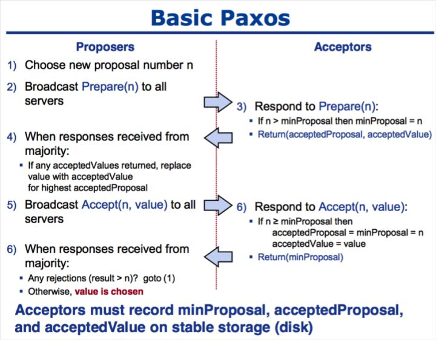
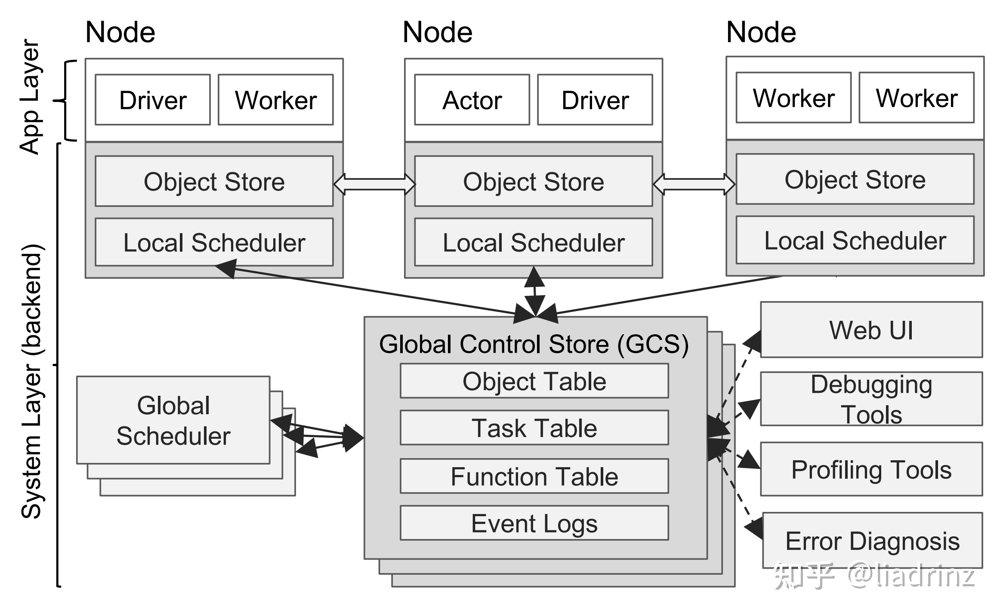

MemLiner: Lining up Tracing and Application for a Far-Memory-Friendly Runtime
- 关键词：远程存储,GC（垃圾回收）,JDK,
- 作者在论文中为了解决当前GC存在的两大问题（资源竞争，低效预取）提出了新的运行时技术(MemLiner)可以结合当前已有的GC技术，将回收效率提高1.5~2倍。
- 需要注意该技术被希望运用在远程的分布式存储系统上以减少远程管理存储的开销，同时实验主要在服务器上运行，硬件要求较高（CPU E5-2640，128GB mem, 1024GB SSD,connected by RDMA over 40Gbps InfiniBand network）,综合考虑该论文属于JVM GC调优的范畴，可实操性不明确。
链接：https://www.zhihu.com/question/32373436/answer/56298840
1、引用计数法 最早，最古老的垃圾回收算法了。据说是跟微软有关？不考据了。简单讲，就是一个对象如果被引用，计数就加一，不引用了，就减一。计数为0的对象，意为不再被引用，垃圾回收时即被回收。 现在几乎没有用这个垃圾回收算法的了，因为有个很明显的缺陷，容易陷入循环引用。还有就是，老是加一减一的，浪费性能不是。 2、标记清除法 标记清除法用的还是不少的。分两步，第一步，标记，具体的，是从根对象出发，标记所有可到达的对象。可到达的对象，即为正在被引用的，不会被清除；第二步，清除，不被标记的就清除了。 标记清除法还是挺好用的，不过容易造成内存碎片。下面就是解决这个碎片问题的孪生兄弟，标记压缩法。 3、标记压缩法 标记压缩法在jvm几个垃圾回收器中有使用，具体哪几个不记得了。还是两步，第一步与标记清除法相同，标记，不细说了。第二步，将标记的对象，复制到内存的一个区域，然后将区域外的对象全部清空。这样，解决碎片问题。 4、复制算法 上面的标记压缩法已经有一些复制算法的思想了。复制算法就是把内存分为两半，刚开始只使用一半内存，然后需要垃圾回收时，将依然被引用的对象复制到另一半对象中，然后清空这一半内存，随后启用另一半内存空间，依次循环调用。 效果挺好的，很多垃圾回收器都用这个。缺点嘛，也挺明显的，平白损失一半内存。 5、分区 分区，这个也许不能算算法了，算是一种思想。就是有一点分治法的意思，把内存分为几个区域，垃圾回收只分别处理这些小区域，这样，STW的时间就会少了。Java的G1GC就用了这个思想。 6、分代 分代，这个也很常见，例如Java中有年轻代和老年代，年轻代又分为eden区和survivor区，survivor区分为from/to区。不同的区域适用不同的算法，一般来讲，年轻代适合复制算法，老年代适合标记清除或标记压缩。
RPC(Remote Procedure Call) 调研
- RPC（Remote Procedure Call）叫作远程过程调用，它是利用网络从远程计算机上请求服务，可以理解为把程序的一部分放在其他远程计算机上执行。通过网络通信将调用请求发送至远程计算机后，利用远程计算机的系统资源执行这部分程序，最终返回远程计算机上的执行结果。
RPC 工作原理总结：
Provider：服务提供方，CS 模型中的 Server。 Consumer： 调用远程服务服务消费方，CS 模型中的 Client。 Registry：服务注册与发现的服务管理中心。 Monitor：统计服务的调用次数和调用时间的监控中心。 Container：服务运行容器，如 jetty。
RPC 执行过程总结：
服务容器负责启动，加载，运行服务提供者。 服务提供者在启动时，向注册中心注册自己提供的服务，暴露自己的 IP 和端口信息。 服务消费者在启动时，向注册中心订阅自己所需的服务。 注册中心返回服务提供者列表给消费者，如果有变更，注册中心将基于长连接推送给数据消费者。 服务消费者，从提供这地址列表中，基于软负载均衡算法，选一台提供者进行调用，如果调用失败，再选另外一台服务调用。 服务消费者和提供者，在内存中累计调用次数和调用时间，定时发送一次统计数据到监控中心。
要实现一个RPC不算难，难的是实现一个高性能高可靠的RPC框架。
比如，既然是分布式了，那么一个服务可能有多个实例，你在调用时，要如何获取这些实例的地址呢？
这时候就需要一个服务注册中心，比如在Dubbo里头，就可以使用Zookeeper作为注册中心，在调用时，从Zookeeper获取服务的实例列表，再从中选择一个进行调用。
那么选哪个调用好呢？这时候就需要负载均衡了，于是你又得考虑如何实现复杂均衡，比如Dubbo就提供了好几种负载均衡策略。
这还没完，总不能每次调用时都去注册中心查询实例列表吧，这样效率多低呀，于是又有了缓存，有了缓存，就要考虑缓存的更新问题，blablabla......
你以为就这样结束了，没呢，还有这些：
客户端总不能每次调用完都干等着服务端返回数据吧，于是就要支持异步调用； 服务端的接口修改了，老的接口还有人在用，怎么办？总不能让他们都改了吧？这就需要版本控制了； 服务端总不能每次接到请求都马上启动一个线程去处理吧？于是就需要线程池； 服务端关闭时，还没处理完的请求怎么办？是直接结束呢，还是等全部请求处理完再关闭呢？ ...... 如此种种，都是一个优秀的RPC框架需要考虑的问题。
分布式一致性算法应用场景
https://zhuanlan.zhihu.com/p/31727291
- 分布式一致性(Consensus)
- 领导者选举：进程对leader达成一致
- 互斥：对于访问临界资源（不许同时读写）的进程达成一致
-
原子广播：进程对消息传递顺序达成一致
-
典型应用场景：
- 主从同步
- 主从异步
- Paxos,Raft(提供一致性和可用性的平衡)
CAP理论（一致性，可用性，容错性的不可能三角）
CAP原则又称CAP定理，指的是在一个分布式系统中，一致性（Consistency）、可用性（Availability）、分区容错（Partition-tolerance）。在一个分布式系统中三个要素不可同时具有，只能选择其中两个。 一致性（Consistency） 在分布式系统中，所有节点在同一时刻的数据都是一致的。
可用性（Availability） 在集群中一部分节点故障后，集群整体是否还能响应客户端的读写请求。即每个请求不管成功与否都能得到响应。
分区容错（Partition-tolerance） 保证系统中任意信息的丢失都不会影响系统的运行。
一个分布式系统里面，节点组成的网络本来应该是连通的。然而可能因为一些故障，使得有些节点之间不连通了，整个网络就分成了几块区域。数据就散布在了这些不连通的区域中。这就叫分区。
- 多副本状态机：
- 多副本状态机是指多台机器具有完全相同的状态，并且运行完全相同的确定性状态机。
- 多副本状态机的每个副本上都保存有完全相同的操作日志，保证所有状态机副本按照相同的顺序执行相同的操作，这样由于状态机是确定性的，则会得到相同的状态。
- 保证复制到各个服务器上的日志的一致性正是分布式一致性算法的工作。一致性算法保证所有状态机副本上的操作日志具有完全相同的顺序，如果状态机的任何一个副本在本地状态机上执行了一个操作，则绝对不会有别的副本在操作序列相同位置执行一个不同的操作。
Paxos算法详解
https://zhuanlan.zhihu.com/p/31780743 Paxos将系统中的角色分为提议者 (Proposer)，决策者 (Acceptor)，和最终决策学习者 (Learner): - Proposer: 提出提案 (Proposal)。Proposal信息包括提案编号 (Proposal ID) 和提议的值 (Value)。 - Acceptor：参与决策，回应Proposers的提案。收到Proposal后可以接受提案，若Proposal获得多数 Acceptors的接受，则称该Proposal被批准。 - Learner：不参与决策，从Proposers/Acceptors学习最新达成一致的提案（Value）。
Paxos算法通过一个决议分为两个阶段（Learn阶段之前决议已经形成）： - 第一阶段：Prepare阶段。Proposer向Acceptors发出Prepare请求，Acceptors针对收到的Prepare请求进行Promise承诺。 - 第二阶段：Accept阶段。Proposer收到多数Acceptors承诺的Promise后，向Acceptors发出Propose请求，Acceptors针对收到的Propose请求进行Accept处理。 - 第三阶段：Learn阶段。Proposer在收到多数Acceptors的Accept之后，标志着本次Accept成功，决议形成，将形成的决议发送给所有Learners。 
Raft算法详解
https://zhuanlan.zhihu.com/p/32052223
- Raft算法概述 Raft将系统中的角色分为领导者（Leader）、跟从者（Follower）和候选人（Candidate）：
- Leader：接受客户端请求，并向Follower同步请求日志，当日志同步到大多数节点上后告诉Follower提交日志
- Follower：接受并持久化Leader同步的日志，在Leader告之日志可以提交之后，提交日志。
- Candidate：Leader选举过程中的临时角色。
- Leader选举
- 日志同步 Leader选出后，就开始接收客户端的请求。Leader把请求作为日志条目（Log entries）加入到它的日志中，然后并行的向其他服务器发起 AppendEntries RPC （RPC细节参见八、Raft算法总结）复制日志条目。当这条日志被复制到大多数服务器上，Leader将这条日志应用到它的状态机并向客户端返回执行结果。
Ceph
- 高性能 :
- 摒弃了传统的集中式存储元数据寻址的方案，采用CRUSH算法，数据分布均衡，并行度高。
- 考虑了容灾的隔离，能够实现各类负载的副本放置规则，例如跨机房、机架感知等。
-
能够支持上千个存储节点的规模，支持TB到PB级的数据。
-
高可用 :
- 副本数可以灵活控制
- 支持故障域分隔，数据强一直性
- 多故障场景自动进行修复自愈
-
没有单点故障，自动管理，高可扩展性
-
去中心化 :
- 扩展灵活
-
随着节点增加而线性增长
-
特性丰富 :
- 支持三种存储接口 : 块存储、文件存储、对象存储
- 支持自定义接口，支持多种语言驱动。
MapReduce
 - 介绍:
- MapReduce是一种编程模型和一种产生及处理大数据的实现方式。他的关键在于两个函数（由用户编写）：Map和Reduce
- Types:
- map (k1,v1) ----> list(k2,v2)
- reduce(k2,list(v2)) --->list(v2)
- Example(伪代码):
- 介绍:
- MapReduce是一种编程模型和一种产生及处理大数据的实现方式。他的关键在于两个函数（由用户编写）：Map和Reduce
- Types:
- map (k1,v1) ----> list(k2,v2)
- reduce(k2,list(v2)) --->list(v2)
- Example(伪代码):
map(String key, String value):
// key: document name
// value: document contents
for each word w in value:
EmitIntermediate(w, "1");
reduce(String key, Iterator values):
// key: a word
// values: a list of counts
int result = 0;
for each v in values:
result += ParseInt(v);
Emit(AsString(result));
-
执行过程:
-
MapReduce库先将输入文件分成M份（一般每份64MB，也可用可选参数控制），然后他在集群上启动多份程序
- 有一份特殊的程序拷贝--master，剩下的都是worker并且被master分配任务.共有M个map任务和R份Reduce任务去分配。master选择空闲的worker去分配map task或者reduce task
- 获得map任务的worker从对应的输入文件中读取内容。他从中解析出键值对并且将每一对传给Map函数。这些中间键值对被缓存在存储器中
- 周期性的，分区R份后，这些缓冲的中间键值文件的位置被传输给master,master负责把这些信息发给reduce worker
- 当reduce worker接受到来自master的中间键值文件的位置后，它就使用RPC从map worker的本地磁盘中读取缓存数据，并且根据key进行排序。这样所有出现的相同的key就能被合并到一个组。这个排序是必要的因为通常不同的键会被映射到同一个reduce task中。如果中间键值数据过于庞大的话，则应该使用外部排序
- reduce worker不断的在排序好的中间键值数据上进行迭代，对于遇到的特定的中间键值对，就将键和值集合传入reduce函数中，函数的输出结果就将加载到最终的输出文件中去（对于这个reduce部分）
-
当所有的map和reduce人物都被完成后，master就唤醒用户程序，这时MapReduce的调用完成，继续返回到用户的代码中
-
容错性 Worker Failure master会周期性的测试每一个worker，以此来判定是否执行失败，如果map失败就重新安排worker执行。这是因为由于ma过程的结果存储在本地，如果失败就无法取得结果。但是已经完成的Reduce工作不需要回滚，因为其结果存储在全局文件系统中。 并且如果map失败，比如A失败后任务被B重新执行，那么还未读取A的reduce task就会切换到来自于B的数据输出。 Master Failure 由于Master只有一个节点，因此失败的可能性很低，如果失败就重新运行整个MapReduce
-
相关改进 BackupTask,在大部分任务完成后，调用空闲资源一起完成剩余任务，这是为了避免Straggler拖延进度，任何一个worker完成就标记为整个任务完成。未采用此种机制的过程将会提升44%的时间。
优化分配函数，默认函数是hash(key) mod R，可以改进分配任务的方式使得负载均衡
采用组合函数，将同一类键值对在Map时就组合起来（相当于部分提前了Reduce的工作）
优化数据传输格式，自定义数据格式，方便解析
任务失败时发送信号给Master，累积一定次数后就判定某个记录是坏的，跳过之
进行日志记录和进度显示，方便维护
Ray
背景知识：演员模型（actor,也被译作行动器） 演员模型推崇的哲学是“一切皆是演员”，这与面向对象编程的“一切皆是对象”类似。
演员是一个运算实体，响应接收到的消息，相互间是并发的：
发送有限数量的消息给其他演员； 创建有限数量的新演员； 指定接收到下一个消息时要用到的行为。 以上动作不含有顺序执行的假设，因此可以并行进行。
发送者与已发送通信的解耦，是演员模型的根本优势，演员模型启用了异步通信并将控制结构当作消息传递的模式
Ray框架的需求和设计
- 支持细粒度的计算
- 支持对于时间和资源的非均匀使用
- 支持动态执行
为了满足这些任务的需求，Ray实现了一套统一的接口，这套接口既能表达基于任务的并行计算(task-parallel)，又能表达基于行动器的并行计算(actor-based)。前者使得Ray能高效地、动态地对仿真、高维状态输入处理（如图像、视频）和错误恢复等任务进行负载均衡，后者行动器的设计使得Ray能有效地支持有状态的计算，例如模型训练、与客户端共享可变状态（如参数服务器）。
Ray编程模型
futures = f.remote(args)
远程地执行函数f。f.remote()以普通对象或future对象作为输入，返回一个或多个future对象，非阻塞执行。
objects = ray.get(futures)
返回与一个或多个future对象相关联的真实值，阻塞执行
ready_futures = ray.wait(futures, k, timeout)
当futures中有k个future完成时，或执行时间超过timeout时，返回futures中已经执行完的future
actor = Class.remote(args) futures = actor.method.remote(args) 将一个类实例化为一个远程的行动器，并返回它的一个句柄。然后调用这个行动器的method方法，并返回一个或多个future. 两个过程均为非阻塞的。
任务的编程范式如下：
- 注册任务：在需要注册为任务的函数上加上@ray.remote装饰器
- 提交任务：在调用具有@ray.remote装饰器的函数时，需要带上.remote()而不是直接调用
- 非阻塞提交：无论任务的运行需要多少时间，在提交任务后都会立即返回一个ObjectRef对象
- 按需阻塞获取结果：在你需要函数的返回值时，可以通过ray.get来获取
优点： - 细粒度负载均衡：利用任务级粒度的负载感知调度来进行细粒度的负载均衡 - 输入数据本地化：每个任务可以在存有它所需要的数据的节点上调度 - 较低的恢复开销：无需记录检查点或恢复到中间状态
行动器的编程范式
- 注册行动器：在需要注册为行动器的类上加上@ray.remote装饰器
- 实例化行动器：相比于普通Python类的实例化，需要在类名后加上.remote
- 提交方法调用：调用行动器的方法时，同样需要带上.remote()而不是直接调用
- 非阻塞提交：无论方法的运行需要多少时间，在提交任务后都会立即返回一个ObjectRef对象（同一行动器实例下，方法会按照提交顺序串行地运行）
- 按需阻塞获取结果：在需要方法运行的返回值时，可以通过ray.get来获取
优点： 使用行动器的架构可以使整个系统中只维护一份参数信息，并且对于同一份参数的更新操作都是串行的。另外，提交参数更新的请求是非阻塞的，参数更新是GPU密集型的任务，因此在提交完后还可以并行地去做CPU密集型的任务，这也是Ray框架异构性的体现。
Ray计算模型
Ray采用动态任务图计算模型，在这一模型中，当输入数据就绪时，系统将自动触发相应的远程函数和行动器方法的执行。本节将介绍计算图是如何在用户程序中构建的。
首先，不考虑行动器的参与，计算图的节点可以分为两类：数据对象和远程函数调用（任务）。同样地，边也可以分为两类：数据边和控制边。数据边用来记录数据和任务之间的依赖关系,控制边用来记录任务之间嵌套调用的依赖关系.
行动器方法的调用也表示为节点，它们与远程函数基本相同，只是为了记录同一行动器上的后续方法调用之间的状态依赖关系，需要增加第三种类型的边：状态边。状态边将同一行动器下的方法调用组织成链式结构，这一链式结构记录了方法的调用顺序。
Ray的架构
Ray的架构由应用层和系统层组成，其中应用层实现了Ray的API，作为前端供用户使用，而系统层则作为后端来保障Ray的高可扩展性和容错性。整体的架构图如下图所示： 
- 驱动器进程 (Driver Process): 执行用户程序的进程。顾名思义，所有操作都需要由主进程来驱动。
- 工作器进程 (Worker Process): 执行由驱动器或其他工作器调用的任务（远程函数）的无状态的进程。工作器由系统层分配任务并自动启动。当声明一个远程函数时，该函数将被自动发送到所有的工作器中。在同一个工作器中，任务是串行地执行的，工作器并不维护其任务与任务之间的局部状态，即在工作器中，一个远程函数执行完后，其局部作用域的所有变量将不再能被其他任务所访问。
- 行动器进程 (Actor Process): 行动器被调用时只执行其所暴露的方法。行动器由工作器或驱动器显式地进行实例化。与工作器相同的是，行动器也会串行地执行任务，不同的是行动器上执行的每个方法都依赖于其前面所执行的方法所导致的状态。
系统层 系统层由三个主要部件组成：全局控制存储器 (Global Control Store)、分布式调度器 (Distributed Scheduler)和分布式对象存储器 (Distributed Object Store)。这些部件在横向上是可扩展的，即可以增减这些部件的数量，同时还具有一定的容错性。
GCS GCS设计的初衷是让系统中的各个组件都变得尽可能地无状态，因此GCS维护了一些全局状态：
- 对象表 (Object Table)：记录每个对象存在于哪些节点
- 任务表 (Task Table)：记录每个任务运行于哪个节点
- 函数表 (Function Table)：记录用户进程中定义的远程函数
- 事件日志 (Event Logs)：记录任务运行日志
分布式调度器
Ray中的任务调度器被分为两层，由一个全局调度器和每个节点各自的局部调度器组成。为了避免全局调度器负载过重，在节点创建的任务首先被提交到局部调度器，如果该节点没有过载且节点资源能够满足任务的需求（如GPU的需求），则任务将在本地被调度，否则任务才会被传递到全局调度器，考虑将任务调度到远端。由于Ray首先考虑在本地调度，本地不满足要求才考虑在远端调用，因此这样的调度方式也被称为自底向上的调度。
分布式对象存储器
Ray实现了一个内存式的分布式存储系统来存储每个任务的输入和输出。Ray通过内存共享机制在每个节点上实现了一个对象存储器 (Object Store)，从而使在同一个节点运行的任务之间不需要拷贝就可以共享数据。当一个任务的输入不在本地时，则会在执行之前将它的输入复制到本地的对象存储器中。同样地，任务总会将输出写入到本地的对象存储器中。这样的复制机制可以减少任务的执行时间，因为任务永远只会从本地对象存储器中读取数据（否则任务不会被调度），并且消除了热数据可能带来的潜在的瓶颈。
进程和线程
- 线程：线程是一个基本的CPU执行单元，它必须依托于进程存活。一个线程是一个执行上下文，即一个CPU执行时所需要的一串指令
- 进程：进程是指一个程序在给定数据集合上的一次执行过程，是系统进行资源分配和运行调用的独立单位。
- 每一个进程启动时都会最先产生一个进程，即主线程。然后主线程会再创建其他的子线程。
-
线程必须在某个进程中执行。
-
一个进程可包含多个线程，其中有且只有一个主线程。
- 多线程共享同个地址空间、打开的文件以及其他资源。
- 多进程共享物理内存、磁盘、打印机以及其他资源。
Spark和MapReduce区别，可能的改进点
区别:
- 内存和磁盘使用方面
MapReduce需要将每次计算的结果写入磁盘，然后再从磁盘读取数据，从而导致了频繁的磁盘IO。Spark通常不需要将计算的结果写入磁盘，可以在内存中进行迭代计算。这得益于Spark的RDD和DAG（有向无环图），其中DAG记录了job的stage以及在job执行过程中父RDD和子RDD之间的依赖关系。中间结果能够以RDD的形式存放在内存中，极大减少了磁盘IO。 2. Shuffle上的不同
Spark和MapReduce在计算过程中通常都不可避免的会进行Shuffle，Shuffle都会落盘，但：MapReduce在Shuffle时需要花费大量时间进行排序，排序在MapReduce的Shuffle中似乎是不可避免的；Spark在Shuffle时则只有部分场景才需要排序，支持基于Hash的分布式聚合，更加省时；
-
任务级别并行度上的不同
-
MapReduce采用了多进程模型，而Spark采用了多线程模型。多进程模型的好处是便于细粒度控制每个任务占用的资源，但每次任务的启动都会消耗一定的启动时间。就是说MapReduce的Map Task和Reduce Task是进程级别的，都是 jvm 进程，每次启动都需要重新申请资源，消耗了不必要的时间。
- Spark Task则是基于线程模型的，通过复用线程池中的线程来减少启动、关闭task所需要的开销。（多线程模型也有缺点，由于同节点上所有任务运行在一个进程中，因此，会出现严重的资源争用，难以细粒度控制每个任务占用资源）
局限性
- 没有文件管理系统，依赖与其他平台集成
- Spark不完全支持实时数据流处理。在Spark流中，实时数据流被分为几批，称为Spark RDD（弹性分布式数据库）。在这些RDD上应用诸如join，map或reduce等操作来处理它们。处理后，结果再次转换为批次。
- 使用Spark时，内存消耗非常高。Spark需要巨大的RAM来处理内存。Spark中的内存消耗非常高
- 小文件发行当我们将Spark与Hadoop一起使用时，存在文件较小的问题。HDFS附带了数量有限的大文件，但有大量的小文件。如果我们将Spark与HDFS一起使用，则此问题将持续存在。但是使用Spark时，所有数据都以zip文件的形式存储在S3中。现在的问题是所有这些小的zip文件都需要解压缩才能收集数据文件。
- 相对于Flink延迟高
- 在Spark流传输中，根据预设的时间间隔将数据分为小批。因此，Apache Spark支持基于时间的窗口条件，但不支持基于记录的窗口条件。
- 手动优化 使用Spark时，需要手动优化作业以及数据集。要创建分区，用户可以自行指定Spark分区的数量。为此，需要传递要固定的分区数作为并行化方法的参数。为了获得正确的分区和缓存，应该手动控制所有此分区过程。
Spark论文中译版
参照：https://zhuanlan.zhihu.com/p/29517436
intro
相较于MR，分布式共享存储，键值对存储等提供基于粒度的更新可变状态的系统，RDDs(Resilient Distributed Datasets（RDDs）)提供了基于粗粒度转换的接口。这样可以避免通过记录真实数据进行容错恢复，而是只要对所依赖的RDDs区进行重新计算即可。
RDD:一个 RDD 是一个只读, 被分区的数据集.我们可以通过两种对稳定的存储系统和其他的 RDDs 进行操作而创建一个新的 RDDs.为了区别开 RDDs 的其他操作, 我们称这些操作为 transformations, 比如 map, filter 以及 join 等都是 transformations 操作.
编程者可以通过对稳定存储的数据进行转换操作（即 transformations, 比如 map 和 filter 等）来得到一个或者多个 RDDs. 然后可以对这些 RDDs 进行 actions 操作, 这些操作可以是得到应用的结果值, 也可以是将结果数据写入到存储系统中 我们需要记住 transformations 是用来定义一个新的 RDD 的 lazy 操作, 而actions 是真正触发一个能返回结果或者将结果写到文件系统中的计算.
思考：在这种容错方法中恢复分区需要考虑所依赖的分区，但是如果某些transformation是可逆的（或者弱一些的，信息完全的），也许可以通过待恢复分区的transformation产生的分区进行恢复。
RDD模型的优势
- 相对于一般的分布式共享内存系统(Distributed shared memory 即 DSM)，由于RDDs的创建过程受到限制，由此带来的lineage进行恢复数据就带来了额外的优势，因此不需要发生非常耗时的checkpoint操作。
- 它不变的特性使的它可以和 MapReduce 一样来运行执行很慢任务的备份任务来达到缓解计算很慢的节点的问题. 在 DSM 中, 备份任务是很难实现的, 因为原始任务和备份任务或同时更新访问同一个内存地址和接口.
RDD的不足
RDDs 非常适合将相同操作应用在整个数据集的所有的元素上的批处理应用. 在这些场景下, RDDs 可以利用血缘关系图来高效的记住每一个 transformations 的步骤, 并且不需要记录大量的数据就可以恢复丢失的分区数据. RDDs 不太适合用于需要异步且细粒度的更新共享状态的应用, 比如一个 web 应用或者数据递增的 web 爬虫应用的存储系统. 对于这些应用, 使用传统的纪录更新日志以及对数据进行 checkpoint 会更加高效. 比如使用数据库、RAMCloud、Percolator 以及 Piccolo. 我们的目标是给批量分析提供一个高效的编程模型, 对于这些异步的应用需要其他的特殊系统来实现.
Spark 省流
Spark是一个快速、通用、可扩展的分布式计算系统，它最初是由加州大学伯克利分校AMPLab开发的。Spark提供了一种基于内存的计算模型，可以比Hadoop MapReduce更快地处理大规模数据，支持Java、Scala、Python和R等多种编程语言。
Spark的核心概念是弹性分布式数据集（Resilient Distributed Datasets，简称RDD）。RDD是一种可以被划分成多个分区、分布在多个节点上的数据结构，支持高效的并行计算和容错。Spark中的许多计算都是通过对RDD进行转换和操作来实现的。
Spark的计算过程可以分为两个阶段：转换阶段和动作阶段。在转换阶段，Spark会对RDD进行一系列转换操作，例如map、filter、reduceByKey等。这些操作不会立即执行，而是构建一个执行计划。在动作阶段，Spark会根据执行计划将转换操作转化为实际的计算任务，例如collect、count、save等。这些任务会被分配到不同的节点上执行，最终将结果汇总返回给驱动程序。
Spark的运行模式可以分为本地模式和集群模式。在本地模式下，Spark可以直接在单台机器上运行，用于开发和测试。在集群模式下，Spark可以运行在多台机器上，实现分布式计算。
Spark还提供了许多高级功能，例如机器学习、图计算、流处理等。Spark的生态系统也非常丰富，包括Spark SQL、Spark Streaming、GraphX等，可以满足不同应用场景的需求。
关于Scala
Spark 使用 scala 语言实现了抽象的 RDD, scala 是建立在 java VM 上的静态类型函数式编程语言. 我们选择 scala 是因为它结合了简洁（很方便进行交互式使用）与高效（由于它的静态类型）. 然而, 并不是说 RDD 的抽象需要函数式语言来实现.
系统实现
- 系统调度器
- 交互式程序解释器
- 内存管理
- checkpointing技术
 - 任务调度器
总体来说，任务调度器（scheduler）按照 driver, workder 中的程序，在集群中分配任务。上图是经典的有向无环图（DAG），每一步都是在生成一个新的RDD，只有第一个作用在RDD上的动作函数开始时，正式的数据流才开启。图中矩形框代表一个RDD，有背景色（不管蓝黑）的矩形代表一个分区，黑色代表该分区是持久化驻留在内存中的。
- 任务调度器
总体来说，任务调度器（scheduler）按照 driver, workder 中的程序，在集群中分配任务。上图是经典的有向无环图（DAG），每一步都是在生成一个新的RDD，只有第一个作用在RDD上的动作函数开始时，正式的数据流才开启。图中矩形框代表一个RDD，有背景色（不管蓝黑）的矩形代表一个分区，黑色代表该分区是持久化驻留在内存中的。
任务调度器最有特点的功能在于它对数据归属非常敏感。如果程序需要的RDD分区数据在某台节点的内存里，任务就优先分发到那台节点上；如果集群中所有内存都没有需要的分区数据，任务调取器则会根据RDD提供的优选地址，将任务分配到那些节点上。
- 集成的解释器
Spark计算框架允许用户在Scala提供的解释器窗口（与Python,Ruby类似的解释器窗口），交互式的利用大数据集群提供的算力，查询和操控大规模数据库集。交互式操作，即一次运算表达式，可以操作数千台计算机的计算资源，并且得益于集群内存计算模式，而非MapReduce借助硬盘的低效模式，以低延迟的方式得到该步计算的结果。
其实就是集成方便调bug
- 内存管理
- 内存中反序列化的Java对象；
- 内存中序列化的Java对象；
- 硬盘存储
内存吃紧时Spark会采用回收分区方式。回收机制采用的是常规LRU（Least Recently Used）算法,即最近最少使用的算法。
- 支持checkpointing
checkpointing的技术本质是为长链操作尤其是依赖宽关系的计算做结果缓存。
长链操作：经由一系列转换操作得来的RDD，在故障之后， 复需要经历同样多步骤，会导致时间过多的消耗，这就是长 操作。
一些讨论: 谱系图在完成单个MapReduce任务后，被丢失的无影无踪. 借助硬盘运算的开销巨大，Spark可以去掉序列化和反序列化，刻录副本的副作用 避免（或者减少）checkpoint来减少恢复成本。
状态转移和复制状态机
状态转移(State Transfer) Backup会保存收到的最近一次状态，所以Backup会有所有的数据。当Primary故障了，Backup就可以从它所保存的最新状态开始运行。所以，状态转移就是发送Primary的状态。虽然VMware FT没有采用这种复制的方法，但是假设采用了的话，那么转移的状态就是Primary内存里面的内容。这种情况下，每过一会，Primary就会对自身的内存做一大份拷贝，并通过网络将其发送到Backup。为了提升效率，你可以想到每次同步只发送上次同步之后变更了的内存。
复制状态机(Replicated State Machine) 复制状态机基于这个事实：我们想复制的大部分的服务或者计算机软件都有一些确定的内部操作，不确定的部分是外部的输入。通常情况下，如果一台计算机没有外部影响，它只是一个接一个的执行指令，每条指令执行的是计算机中内存和寄存器上确定的函数，只有当外部事件干预时，才会发生一些预期外的事。例如，某个随机时间收到了一个网络数据包，导致服务器做一些不同的事情。所以，复制状态机不会在不同的副本之间发送状态，相应的，它只会从Primary将这些外部事件，例如外部的输入，发送给Backup。通常来说，如果有两台计算机，如果它们从相同的状态开始，并且它们以相同的顺序，在相同的时间，看到了相同的输入，那么它们会一直互为副本，并且一直保持一致。
总结方向
- 主题： 基于MapReduce的分布式计算系统改进 改批处理为流处理，改硬盘读写为内存缓冲，多Master改进 ,针对不同处理对象细分任务类型，借此增加算子种类，增加对不同种模型的支持，提升容错效率（原本是重新计算，可以考虑日志备份或状态机复制方法），分层调度结构，提升效率，考虑用并查集图结构替代等等
- 创新点: 可以提高性能，在保证容错性的前提下提高效率。 使资源分配更加均衡，增加算子种类可以对批量数据和实时流处理提供比经典MR更有针对性的优化。
- 与操作系统相关性: 分布式系统既包括了操作系统中的经典任务：管理内存，IO，网络资源以及进行任务调度，也包括一般操作系统中未给予主要关注的但是在分布式场景下重要的容错容灾，并发处理和一致性共识等问题，对培养系统能力和意识提出了更大的挑战
- 可行性: MR来自04年Google在OSDI上的奠基论文，发展至今已有多种发展成果，并且开源项目众多，相关工作很多。并且在此以外，现代的新出现的Ray,Flink等新兴架构也可以提供关于分布计算模型的启发。
- 比较:
- Spark对于RDD的创建方式不够灵活，同时对于实时处理不够完善
- Ray专注机器学习优化，系统复杂，并且编程范式依赖多次转化，在小型任务上反而性能不佳
- MapReduce使用大量IO，并且容错机制简单，shuffle也带来损失.
- Flink容错需要转移状态，这是由于专注实时处理带来的恢复性能损失
- 新算子设计: "append"，"merge"定义了实时追加的新的数据的处理行为。 "append"表示产生了实时的在线计算请求和新的数据信息 "merge" 表示实时数据与已有数据产生冲突时的处理策略（比如保留或者替换） 传统MapReduce是离线的，新加入的数据如果从头再次执行一遍MapReduce资源开销大且没有必要， 加入新的算子以后，实时信息可以得到热处理，即在原有计算过程中无缝衔接。 append(k1,v1,pl)，返回值同map(k1,v1). append在调度层上执行，将数据发给空闲的map worker,产生的键值对数据由pl(priority level)决定暂存在本地内存上等待master统一周期性处理(同步方式)还是存储在全局存储器上并将位置立即发送给reduce worker(异步方式).由此可以实现实时数据不同优先级行为的控制。 merge在reduce worker上执行，当实时数据与已处理的数据结果矛盾时(例如统计文本集中出现的字数或者一段序列中最小值时)，触发自定义异常，并在由用户定义的merge中进行处理。 由此产生的对于MR算法结构的调整使得新的优化方式成功实现了对于流式数据的处理。
Zookeeper
ZooKeeper主要服务于分布式系统，可以用ZooKeeper来做：统一配置管理、统一命名服务、分布式锁、集群管理。
使用分布式系统就无法避免对节点管理的问题(需要实时感知节点的状态、对节点进行统一管理等等)，而由于这些问题处理起来可能相对麻烦和提高了系统的复杂性，ZooKeeper作为一个能够通用解决这些问题的中间件就应运而生了。
ZooKeeper的数据结构，跟Unix文件系统非常类似，可以看做是一颗树，每个节点叫做ZNode。每一个节点可以通过路径来标识
那ZooKeeper这颗"树"有什么特点呢？？ZooKeeper的节点我们称之为Znode，Znode分为两种类型：
短暂/临时(Ephemeral)：当客户端和服务端断开连接后，所创建的Znode(节点)会自动删除 持久(Persistent)：当客户端和服务端断开连接后，所创建的Znode(节点)不会删除